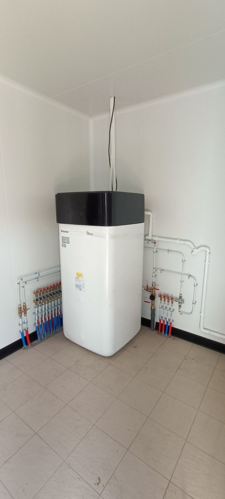

Dépannage plomberie
Fuite d’eau, robinetterie, siphon, WC, alimentation EF/EC, raccord ou petite réparation.
Voir le dépannageArtisan plombier chauffagiste à Ajaccio et alentours
Intervention propre et diagnostic sérieux pour les fuites d’eau, chauffe-eau, débouchages, sanitaires, robinetterie, installations neuves et rénovations de plomberie.
CC-2A – Plomberie Chauffage
CC-2A intervient auprès des particuliers, propriétaires, agences immobilières, conciergeries, syndics, assurances et copropriétés pour les dépannages, installations neuves et rénovations courantes de plomberie.
L’objectif : identifier correctement le problème, limiter les ouvertures inutiles, intervenir proprement et expliquer clairement la solution.
Prestations
Dépannage, recherche de fuite, chauffe-eau, débouchage, sanitaires, installation neuve, rénovation et suivi technique pour bailleurs.
Fuite d’eau, robinetterie, siphon, WC, alimentation EF/EC, raccord ou petite réparation.
Voir le dépannageContrôles visuels, essais ciblés, mise en eau, photos et rapport possible selon la situation.
Voir la recherche de fuiteDépose, pose, groupe de sécurité, raccordements hydrauliques, mise en eau et essais.
Voir les chauffe-eauIntervention sur évier, lavabo, douche, baignoire, WC ou évacuation accessible.
Voir le débouchageRemplacement ou réparation WC, robinetterie, siphons, bondes, flexibles et accessoires sanitaires.
Voir les réparationsCréation ou reprise d’alimentations EF/EC, évacuations, raccordements sanitaires et modifications de réseau.
Voir les réalisationsSuivi plomberie pour logements locatifs, rapports photos, interventions locataires et devis clairs.
Voir l’offre bailleursRepères tarifaires
Les prix exacts dépendent de l’accès, des pièces nécessaires, du déplacement et du temps sur place. Les photos permettent souvent de cadrer rapidement la demande.
Selon zone et disponibilité.
Selon complexité et rapport demandé.
Volume, accès, dépose et raccordements.
Évier, WC, douche, canalisation accessible.
Outillage professionnel
CC-2A intervient avec du matériel adapté aux dépannages plomberie, recherches de fuite, installations, rénovations, débouchages et contrôles d’évacuation.
Pompe à épreuve EF/EC, humidimètre et colorant de traçage pour réaliser des essais ciblés.
Contrôle visuel des conduites, évacuations et zones difficiles d’accès lorsque l’inspection est possible.
Outillage de débouchage pour intervenir sur évier, lavabo, douche, baignoire, WC ou évacuation accessible.
Protections, aspiration eau/poussière et nettoyage après intervention selon la configuration du chantier.
Recherche de fuite
Recherche de fuite sur parties accessibles, essais ciblés, contrôle des points sensibles et compte rendu possible pour assurance, syndic ou propriétaire.
Voir la page fuiteMéthode d’intervention
Analyse du problème par téléphone ou WhatsApp, avec photos si nécessaire.
Contrôle visuel, essais ciblés et identification de la solution la plus adaptée.
Protection de la zone, réparation, installation ou rénovation selon le cas.
Explications claires, essais après remise en service et photos si nécessaire.
Interventions courantes
Quelques exemples d’interventions régulièrement demandées à Ajaccio et alentours.
Dépose, pose, raccordements, groupe de sécurité, mise en eau et contrôle d’étanchéité.
Recherche ciblée, contrôle des points sensibles, réparation ou préconisation adaptée.
Intervention sur évacuation accessible, contrôle d’écoulement et nettoyage de la zone.
Création ou modification de réseaux EF/EC, évacuations, robinetterie, sanitaires et raccordements.
Photos de réalisations
Sélection courte : chauffe-eau, salle d’eau, nourrices, réseaux EF/EC et raccordements plomberie.



Agences, propriétaires, conciergeries
Interventions locataires, rapports photos, suivi par message, devis clair et possibilité de fonctionnement récurrent par logement ou par intervention.
Filtration d’eau
Installation de filtration d’eau avec boîtier de commande, filtre, vannes, raccordements et traitement UV.
Avis clients Google
Extraits d’avis Google laissés par des clients après intervention plomberie, dépannage ou remplacement de chauffe-eau.
“Si il y a un numéro de plombier chauffagiste à avoir dans votre répertoire c’est bien celui de Christophe Cappaï. Un artisan rigoureux, efficace, à l’écoute et bienveillant. Une totale confiance.”
“Très satisfaite de chacune des interventions effectuées par Monsieur Cappaï. Un professionnel très sympathique et surtout très réactif qui effectue un travail impeccable. Je recommande sans hésitation.”
“Appelé en urgence pour un problème de cumulus, il est intervenu dans la matinée et a résolu le problème de façon très efficace. Je ferai désormais appel à lui pour tout type d’intervention de plomberie.”
“Changement de chauffe-eau impeccable : fourniture rapide d’un devis, rendez-vous rapide et bien respecté, travail très soigné, prix compétitif. Et en plus, M. Cappai est très sympathique !”
“Travail sérieux et soigné pour le remplacement du cumulus. Intervention rapide, ponctuelle et chantier laissé propre. Je recommande.”
“Très grand professionnel, travail propre, soigné, chantier réalisé dans les délais.”
Zone d’intervention
Ajaccio, Mezzavia, Pietralba, Afa, Alata, Bastelicaccia, Sarrola-Carcopino, Porticcio, Cauro, Cuttoli. Déplacement hors zone sur demande et selon barème.
Questions fréquentes
Oui. Des photos de la fuite, du chauffe-eau, des raccords ou de l’évacuation permettent souvent de mieux estimer l’intervention.
Selon la situation, un rapport photo ou un compte rendu technique peut être préparé pour assurance, propriétaire, syndic ou agence.
Oui. Une page dédiée présente le fonctionnement pour les logements locatifs, conciergeries et agences immobilières.
Contact
Contactez CC-2A pour une intervention, une installation neuve, une rénovation, une recherche de fuite ou une demande de devis.